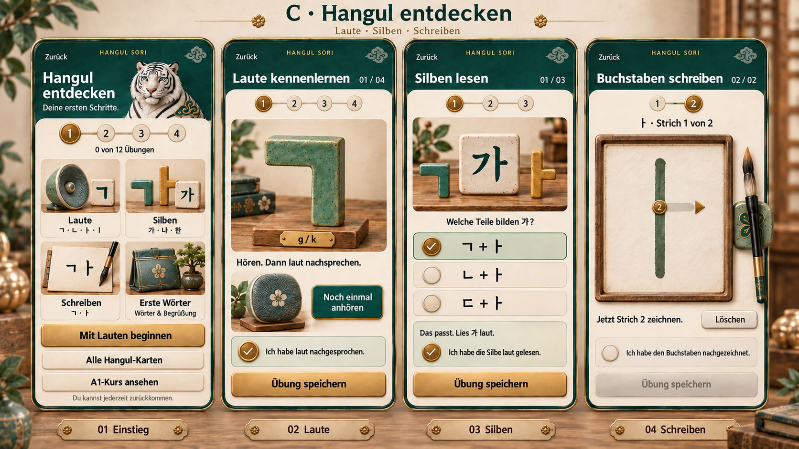
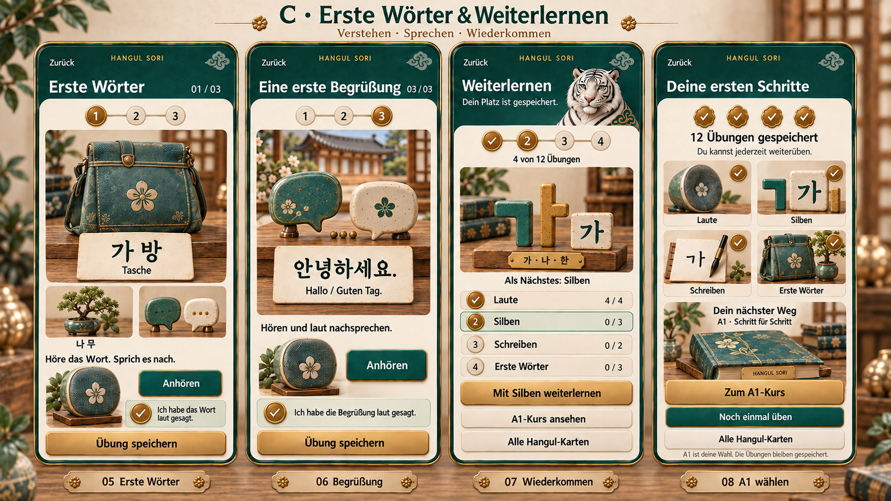
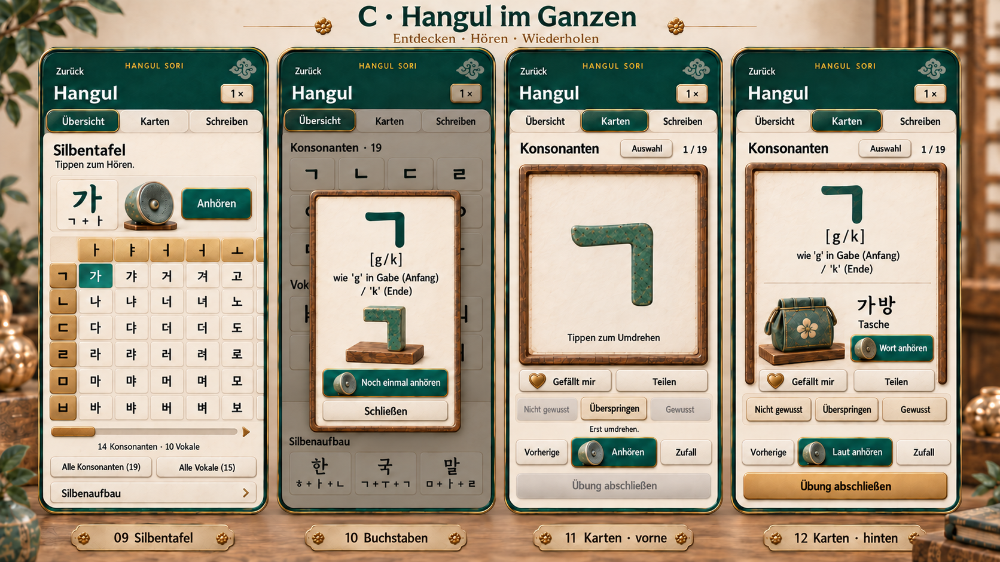
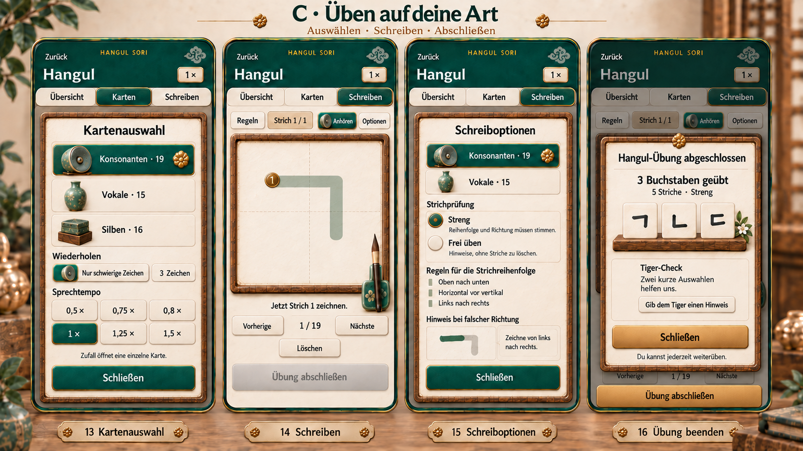

C · LEARNING WORKSPACE
아래 동작은 Flutter에서 연결할 기존 기능입니다. 이 갤러리에서는 디자인만 확인합니다.
기존 기능 연결 보기
연결 소스:
HANGUL SORI · C FOUNDATION
짧은 입문 8장과 기존 Hangul 전체 연습 8장. 녹청·한지·원목·황동의 C 질감으로 소리부터 음절표·카드·쓰기까지 이어 갑니다.




C · LEARNING WORKSPACE
아래 동작은 Flutter에서 연결할 기존 기능입니다. 이 갤러리에서는 디자인만 확인합니다.
연결 소스: